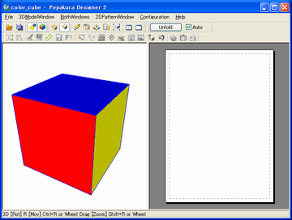
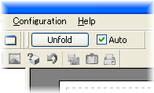
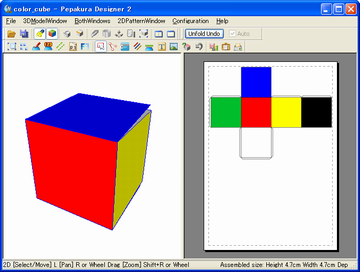

Workflow
Pepakura Designer's simple work flow is shown here. The main functions are
Opening a model, Unfolding, Printing and Saving the file.
1. Loading 3D model data
Pepakura Designer is made to open 3D model data and to unfold the 3D models. To
make this easy the target 3D model should be prepared before hand to have as few
faces as possible. The 3D model can be designed with other 3DCG software, such as
Maya, 3DMAX, Wavefront, Metasequoia.
The following example is using the file [color_cube.mqo] as an example. The
file is included with Pepakura Designer in the [samples] folder.
Firstly select a file by selecting [File]-[Open] in the menu, or drag and drop
a file into Pepakura Designer's main application window. (*.mqo is
Metasequoia's file extension)

Pepakura Designer just after opening [color_cube.mqo] file.
2. Setting sheet size
Most of the popular printers use A4 sized paper as default; and Pepakura
Designer is set to print on A4 paper, this is an initial setting.
If you want to use other paper sizes, please set the sizes in both of the
following settings which are found under, [File]-[Print Setup] (physical size)
and [File]-[Print and Paper Configurations] (Pepakura Designer's setting).
3. Unfolding
To unfold a 3D model, press the [Unfold] button on toolbar. (Check the [Auto]
checkbox before clicking the Unfold button for an easy unfolding)

Unfold button
Pepakura Designer will now display the unfolded 2D pattern.

As you can see, the box was unfolded
4. Printing
To print select [File]-[Print]. Depending on your needs, you may need to change
the settings in the [File]-[Printer Setup] window.
(* For setting up your printer, please see its official manual from its
creator)
5. Saving
To save the unfolding, select [File]-[Save As] and save the unfolding to a
file. The default file name is [color_cube.pdo]. You can change this name to
whatever you like.
(* .pdo is Pepakura Designer's file extension)
This is Pepakura Designer's basic workflow.